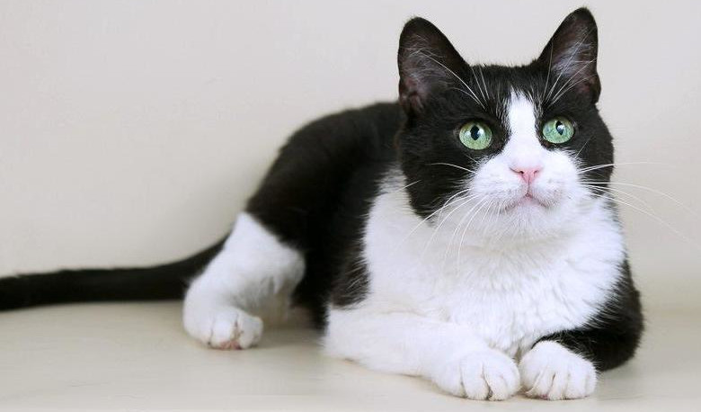

|  | ||
Порода "Барсик"Порода восточно европейских короткошерстных кошек сравнима с обычными, домашними кошками, так как развивалась естественным путем, без вмешательства человека. Эта порода произошла и развивалась в Северной Европе, в Скандинавии и Великобритании. Однако, была существенная разница, скандинавские заводчики отказывались скрещивать с другими породами кошек, оставляя породу как можно более оригинальной. Они использовали местных животных, которые сохраняли характерные особенности породы. Однако британскую короткошерстную скрещивали с персидской, что привело к появлению котов с короткой мордой и более густой шерстью. Так как в то время ее называли европейской короткошерстной, то это привело к возмущению среди скандинавских заводчиков, ведь породы выглядели по-разному. Фелинологические организации признавали обе породы как единую, и судили по единому стандарту, во время соревнований. Но, на международных соревнованиях, были представлены коты обеих типов, и сразу стало ясно, что скандинавский тип выглядит по другому. Одно и тоже название породы для двух, совершенно разных кошек было нелепым. Изменилось все в 1982 году, FIFE не зарегистрировала скандинавский тип европейской кошки как отдельный вид со своим собственным стандартом. |
||
ОписаниеВесит она от 3 до 6 кг, а жить может довольно долго. При содержании во дворе от 5 до 15 лет, а при содержании в квартире до 22 лет! Это связанно с тем, что у домашних животных гораздо меньше стрессов и шансов погибнуть от внешних факторов. Внешне это обычная, домашняя кошка с мощными лапами, средней длины, округлыми подушечками и длинным, довольно толстым хвостом. Уши среднего размера, широкие у основания и закругляющиеся на кончиках. Шерсть короткая, мягкая, блестящая, плотно прилегающая к телу. Окраска — всевозможная: черные, рыжие, голубые, табби, черепаховые и другие окрасы. Цвет глаз согласуется с цветом шерсти и обычно бывает желтым, зеленым или оранжевым. Так же встречаются кошки с голубыми глазами и белым цветом шерсти. ХарактерТак как порода произошла от обычной домашней кошки, то характер может быть очень разным, одним словом описать все типы невозможно. Одни могут быть домашними и не слазить с дивана, другие же неутомимыми охотницами, проводящими на улице большую часть своей жизни. Кстати, по борьбе с грызунами в доме и саду это просто эксперты. Впрочем, это активные, дружественные и умные животные, ведь недаром они происходят от домашних кошек. Они привязаны к хозяевам, но с подозрительностью относятся к незнакомцам. Также нужно отметить уживчивость, они хорошо сосуществуют с другими породами кошек и с не агрессивными собаками. |
||
|
||
| НА ГЛАВНУЮ |